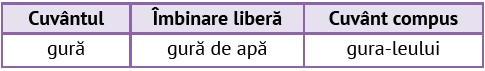

Citeşte, cu atenţie, enunțurile următoare, pentru a răspunde, oral, cerințelor de mai jos:
Completează un tabel asemănător celui dat, folosind cuvintele piatră, floare, bine, alb, conform exemplului.
Asociază, oral, locuțiunile de pe primul rând cu sensul potrivit de pe cel de-al doilea rând:
Transcrie locuțiunea care nu se potrivește în fiecare dintre seriile următoare:
Alcătuiește enunțuri cu locuțiunile identificate la exercițiul 4.
Limba română
25